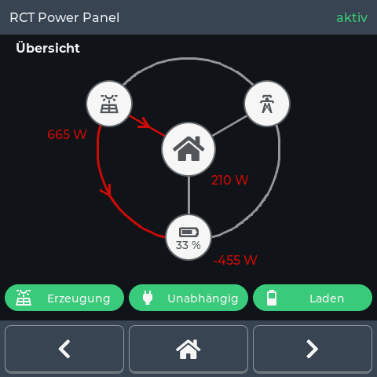

Supported hardware: the Guition ESP32-S3 4848S040 wall display (480 × 480, touch). The installer lists what it can flash.
RCT Power Panel
An energy panel for an RCT Power inverter. It shows what the inverter is doing right now — the power running between the house, the panels, the battery and the grid — together with the day's totals and the last 24 hours as a graph. German or English, whichever the panel is set to.

Install the firmwareNot affiliated with RCT Power GmbH.